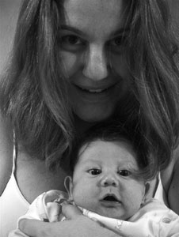

renata
schiavone
“O isolamento da gravidez acabou, vim para me comunicar” - lembra Renata com humor da profética frase impressa nas lembranças da maternidade distribuídas pelos seus pais no dia do seu nascimento – 3 de agosto de 1974 em Ribeirão Preto – SP.
A partir dos 15 anos desenvolveu atividades artísticas como cantora, e teve a oportunidade de trabalhar em parceria com Mários Marcos (Marinho) e Renata Fausti como compositora. Vivenciou uma breve passagem pelo teatro como atriz na peça “Memória Rima com História e Quase Rima com Melancolia” dirigida por Gerson Steves, espetáculo premiado em 4 categorias no IV Festival de Teatro de São Paulo.
Decidiu aplicar a arte aprendida ao mundo corporativo. Assim partiu para Comunicação Social, iniciando sua graduação em Propaganda e Marketing na Universidade Paulista em 1995. Um ano depois associou-se a CODEPE - Consultoria em Vendas, Marketing e Recursos Humanos formada por profissionais com experiência nacional e internacional tendo em seu portifólio empresas como Sharp, Pfizer, Unibanco, Ford, Avon e Tupperware.
Foi convidada pelo Deputado Estadual Paulo Barboza Filho em 97 à assumir a assessoria de comunicação e marketing na Assembléia Legislativa do Estado de São Paulo, com quem trabalhou durante dois anos até o encerramento de seu mandato.
Em 2000 o convite partiu da Apple, dessa vez para gerenciar o projeto “Prêmio Apple de Criatividade Digital”. Seis meses depois tornou-se Gerente Educacional da Apple e um pouco mais tarde Consultora Educacional. Durante sua atuação na Apple ministrou 159 palestras divulgando o Prêmio Apple de Criatividade Digital e abordando temas sobre as novas tecnologias aplicadas à Criação e Educação nas principais Instituições de Ensino Superior em todo Brasil.
Renata planejou e implantou a primeira grande investida da empresa da maçã nas escolas brasileiras de ensino médio e fundamental. 14 de março de 2002, marcou o lançamento do projeto educacional "Olhar Digital - Redescobrindo o Espírito Santo", da Apple em parceria com a Secretaria de Estado da Educação do Espírito Santo e Proinfo.
O Projeto Olhar Digital, tem como proposta desenvolver em parceria com Programas e Entidades Educacionais projetos pedagógicos colocando a tecnologia digital a serviço da educação. No Espírito Santo a ação envolveu todas as 4000 escolas de ensino fundamental e médio de todo o estado. 15.000 estudantes desenvolveram redações sobre as potencialidades turísticas, culturais e sociais do Estado. 60 redações foram selecionadas, saíram do papel e ganharam vida através de um vídeo digital, feito pelas próprias crianças, editado e finalizado com as ferramentas Apple.
Em outubro de 2002, Renata fundou juntamente com Marcelo Inoue a INTERFACE e assumiu a diretoria executiva da empresa. Expandiu seus horizontes profissionais, e ainda deu continuidade aos projetos de Marketing da Apple como o Prêmio Apple de Criatividade Digital (por cinco anos consecutivos), participando desde o planejamento estratégico até a apresentação dos eventos anuais de premiação, onde dividiu os palcos do SESC Pompéia, SESC Vila Mariana e TOM Brasil com grandes profissionais como Marcelo Tas e Wellington Nogueira (Ator e Fundador da ONG Doutores da Alegria).
Em 03 de março de 2005, trouxe à luz seu filho Kenzo . De volta ao trabalho desde setembro, retomou suas funções na Interface e está determinada a cumprir com aquilo a que veio destinada: COMUNICAR.
Contato
rua joaquim floriano, 733 – conjunto 10 B – 10º andar
são paulo – sp – cep
+ 55 11 3168-0170 – 8369-3674 – 9963-9222